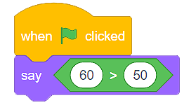

Blokovi (Blocks)¶
Računalni programi su skupovi naredbi koje koristimo da objasnimo računalu kako izvršiti određeni zadatak ili riješiti problem. S obzirom da je većina programskih jezika tekstualna, programeri često unose naredbe.
U jeziku vizualnog programiranja Scratch ne pišemo naredbe, već koristimo blokove koji ih predstavljaju. Programe stvaramo organiziranjem (slaganjem) blokova u odgovarajućem redoslijedu.
Vrste blokova u Scratch-u¶
Postoje četiri vrste blokova u programu Scratch:

Blokovi naredbi;
Blokovi koji povezuju događaje s pokretanjem programa;
Blokovi koji kontroliraju pokretanje programa;
Blokovi koji prijavljuju određenu vrijednost (funkcijski blokovi).
Blokovi naredbi¶
Blokovi naredbi imaju ureze na vrhu i izbočine na dnu. Dizajnirani su na način koji im omogućuje spajanje (slaganje) na druge blokove. Možemo samo povući blok iz odgovarajuće kategorije u područje skripti (prostor za programiranje) i povezati ga s drugim blokovima koji već postoje. Spajanje blokova izgleda kao magnetska privlačnost - čim postavimo zarez jednog bloka u blizinu drugog, on će se “zalijepiti” za njega, nastavljajući slijed. Ispupčenje omogućava novim blokovima da se nadovežu.
Blokovi koji povezuju događaje s pokretanjem programa¶
Ti blokovi imaju “šešire”. To znači da se mogu postaviti samo na početak snopa blokova. Mi obično započinjemo skriptu s jednim od ovih blokova. Na dnu imaju izbočine, koje omogućuju dodavanje novih blokova.
Važno vam je da znate da ti blokovi predstavljaju okidače, koji započinju pokretanje skripti vezanih uz njih. Na primjer, blok  osigurava da se naredbeni blokovi pridruženi pokreću samo kad se klikne zelena zastava koja se nalazi iznad pozornice.
osigurava da se naredbeni blokovi pridruženi pokreću samo kad se klikne zelena zastava koja se nalazi iznad pozornice.
Blokovi koji kontroliraju pokretanje programa¶
Slično kao i naredbeni blokovi, blokovi koji kontroliraju pokretanje programa imaju ureze na vrhu i izbočine na dnu. Možemo ih staviti iznad drugih blokova, kao i druge blokove ispod njih.
Ovi blokovi su također karakterizirani sposobnošću za smještaj drugih blokova (u njih se mogu staviti i drugi blokovi). Na primjer, skripta  omogućuje našem liku da se pomakne 10 koraka 10 puta.
omogućuje našem liku da se pomakne 10 koraka 10 puta.
Blokovi koji prijavljuju određenu vrijednost (funkcijski blokovi)¶
Ti se blokovi, osim oblika, razlikuju od ostalih blokova jer sami ne mogu biti dio skripte. Drugim riječima, ne dodaju se drugim blokovima, već čine sastavni dio bloka u koji su umetnuti.
Funkcijski blokovi sadrže određenu vrijednost. Njihov izgled ovisi o vrsti informacija koje sadrže:
blokovi sa zaobljenim rubovima sadrže brojeve ili string ;
kutni blokovi sadrže vrijednosti Točno (True) ili Netočno (False)
 .
.
Naredbeni blokovi i blokovi koji kontroliraju pokretanje programa imaju polja za unos u koja se mogu umetnuti funkcionalni blokovi. Ta polja unosa mogu imati zaobljeni ili šesterokutni oblik.
U blokovima koji imaju zaobljena polja za unos  , wmožemo umetnuti i zaobljeni i šesterokutni funkcionalni blok
, wmožemo umetnuti i zaobljeni i šesterokutni funkcionalni blok  , dok blokovi sa šesterokutnim poljem unosa
, dok blokovi sa šesterokutnim poljem unosa  , mogu primati samo blokove šesterokutnih funkcija
, mogu primati samo blokove šesterokutnih funkcija  .
.
Uz ove blokove, u okviru kategorija u kojima se nalaze, postoji polje koje je moguće označiti. Kad označite ove okvire, vrijednost pohranjena u tim blokovima postat će vidljiva na pozornici.
Vrijednost pohranjena u funkcionalnom bloku također se može vidjeti klikom na sam blok. Na primjer, blok  pohranjuje vrijednost false jer naš lik ne dodiruje prikazanu boju, dok je blok
pohranjuje vrijednost false jer naš lik ne dodiruje prikazanu boju, dok je blok  pohranjuje vrijednost 22, jer to je zbroj brojeva koje vidimo u bloku.
pohranjuje vrijednost 22, jer to je zbroj brojeva koje vidimo u bloku.
- Q-1: Analizirajte skriptu prikazanu na slici. Odaberite rezultat pokretanja programa.
- 
- Kada kliknemo na zelenu zastavicu, lik će reći "true".
- Odgovor je točan!
- Kada kliknemo na zelenu zastavicu, lik će reći "false".
- Kutni funkcijski blok vraća vrijednosti True ili False. Budući da je izjava 60> 50 istina, lik će reći "true".